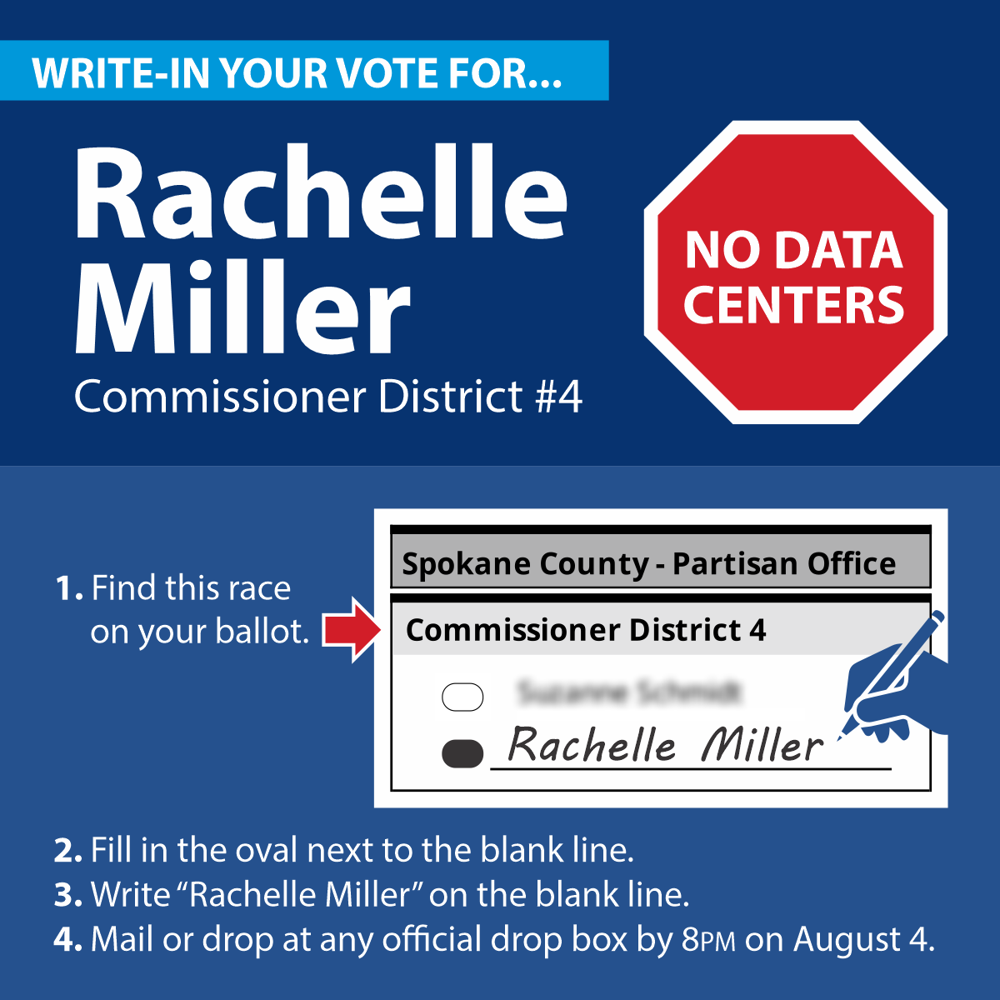

Spokane County Commissioner · District 4
Data centers drain our water, spike our utility bills, pocket billions in tax breaks, and leave us with the consequences. They are coming for Spokane County. Rachelle Miller is running to stop them.
Beat Back the Expansion How to Cast a Write-In Vote
Spokane County has five commissioners. Three are pro-business Republicans who have stayed silent while corporations line up to take our water, land, and power. Our opponent in District 4 has said nothing. One independent voice on that commission changes the dynamic. It forces the conversation. It puts residents at the table before the decisions are made.
When the Spokesman-Review confirmed on June 3 that a corporation was seeking 500 megawatts of power from Avista, the filing deadline had already passed. The county commissioners said nothing. So Rachelle Miller filed as a write-in. If she receives just 1% of the vote in the August 4 primary, she will be on the ballot for the general election. That is not a long shot. That is a plan.